FAWN
Fawn
Let's get started..! For every task in this series, we can get a decent idea on what we'll be working on from the tags given at the top. 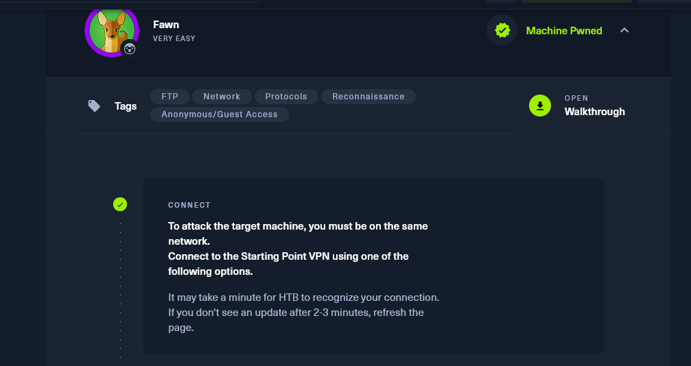 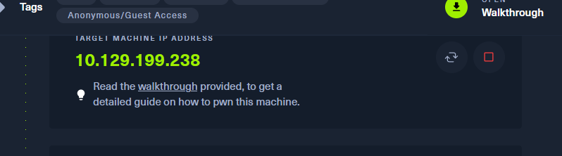 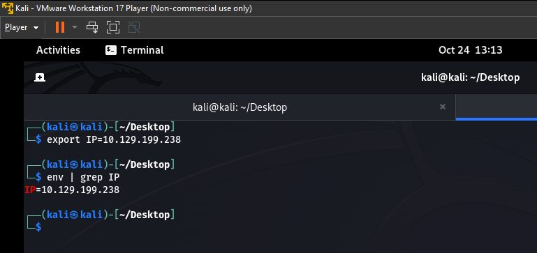 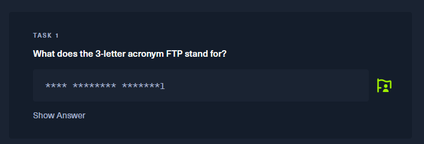 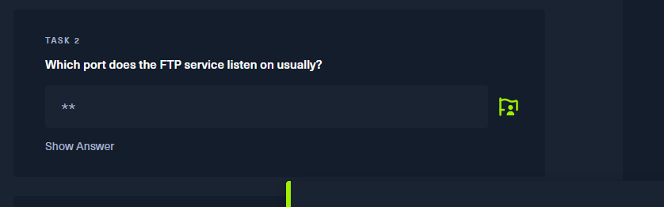 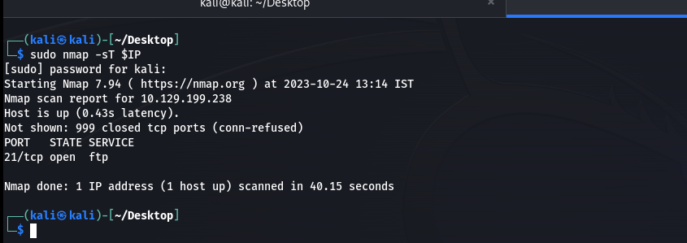 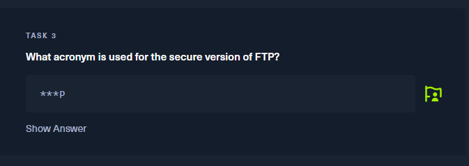 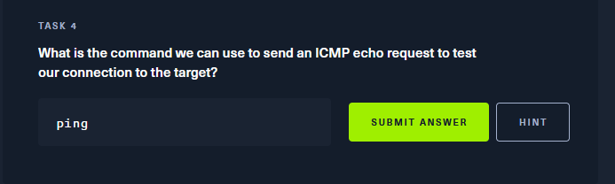 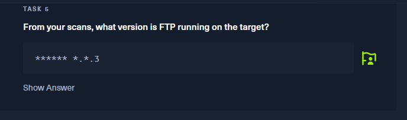 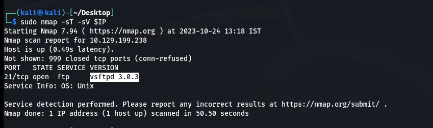 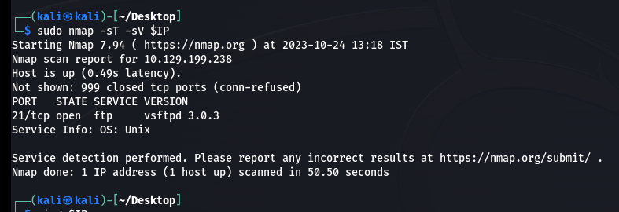 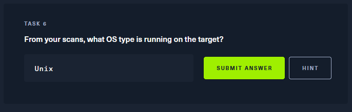 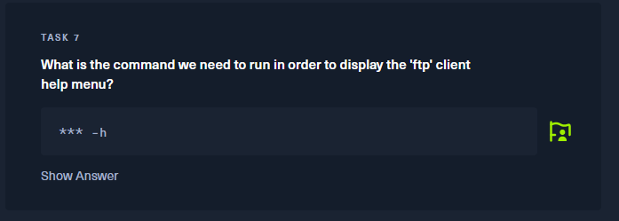 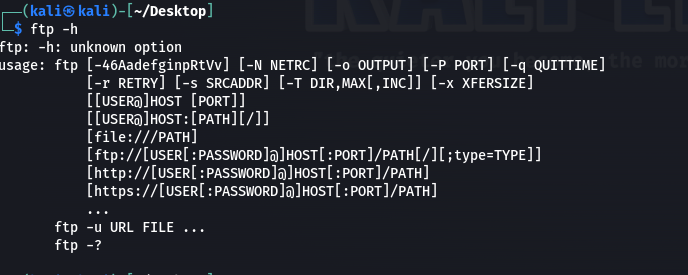 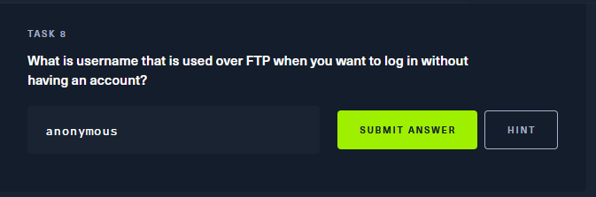 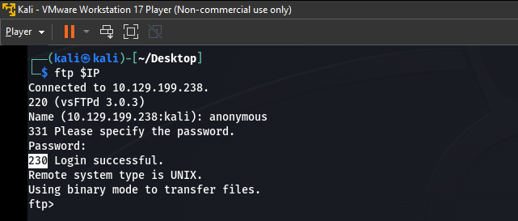 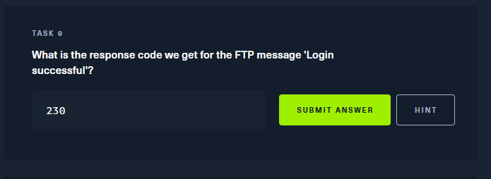 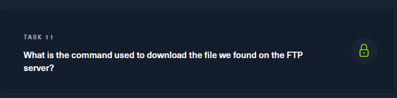 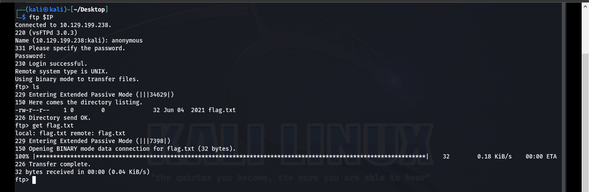 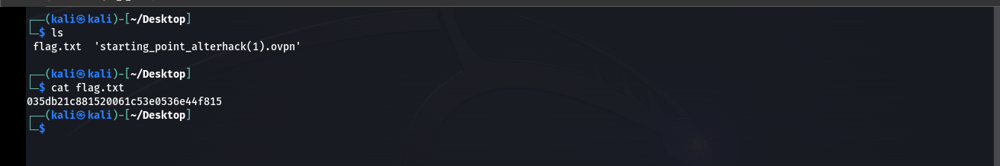
From these tags, we can see that we'll be working on FTP (I'll to what that is in a sec), network protocols,
reconnaissance and anonymous access. In the real world, we would get these ideas from the reconnaissance phase of the
pentesting through Open Source Intelligence (OSINT) and active recon. Moreover, reading on the topics in advance would be a
great way to start. Planning and preparation is most of the work in hacking.
Here is the target IP. You'll probably get a different one.
I don't want to be writing out or copying the ip address every time for commands.
One way to easy my life is by assigning an environment variable which has the scope,
in this case, of the whole system. This is how to set it.
the "export" command does the job. And I can check whether it as taken effect or not using the "env" command. Environment variables should always be in uppercase.
Now for the first task.
The answer for such questions can be googled. I could also use this opportunity to read on
the topic. This is something I love about this sort of learning. Encountering a problem
first and then acquiring the tools to solve it.
Here, ftp stands for File Transfer Protocol
For this we can do an nmap scan to on the target ip.
We can see that the open port is tcp and the port number is 21.
Again a simple google search would tell the answer. But making a guess of "sftp" would
also do the trick.
As we have seen earlier....
Let's do another nmap scan asking for the version.
The -sV switch does that for us and we can see the version here - vsftpd 3.0.3
From the scan we can also see the **Servive Info: OS:** as Unix. This means that machine is
running an Unix operating system. This can be a useful information.
As we can see below, the "ftp -h" command will display the help menu.
This is true for most tools out there.
I'll be honest. I just guessed this answer. Sometimes making an educated guess is all you
have to do..!
But we should always put our guess to a test.
As you can see, **anonymous** really does work. And I'm going to capitalize my poor
screenshot timing. From the same out put we can see the login successful code.
Which answers the next question!
For task 10: We have use the "ls" command quite a few times by this point.
In accessing a ftp server only allows us to transfer the files. Not access them directly
from the host machine.
To download the files from the host, "get" command is used.
As we can see, the get command along with the file name works.
...and there's out flag.